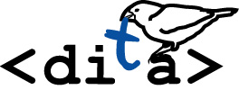

 + An ongoing opinionated experiment
‣ Ongoing
Take a look at the and vote on upcoming features. It also gives a quick overview of the features that are already there with links to examples.roadmap where you can comment
DITA-Bootstrapped prioritize the reader over the author. We also choose modern web as first class citizen over other kinds of output.
Fresh start -> how: by connecting the dots of existing (DITA, , thoughts from SPFE, blogs around) ... when SPFE grows a bit more mature might switch - unless these efforts (blender picture!)
Take a look at the roadmap where you can comment and vote on upcoming features. It also gives a quick overview of the features that are already there with links to examples.
DITA-Bootstrapped prioritize the reader over the author. We also choose modern web as first class citizen over other kinds of output.
Fresh start -> how: by connecting the dots of existing (DITA, , thoughts from SPFE, blogs around) ... when SPFE grows a bit more mature might switch - unless these efforts (blender picture!)